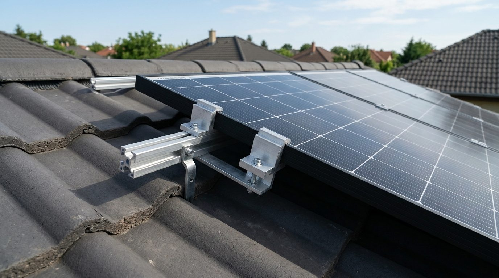
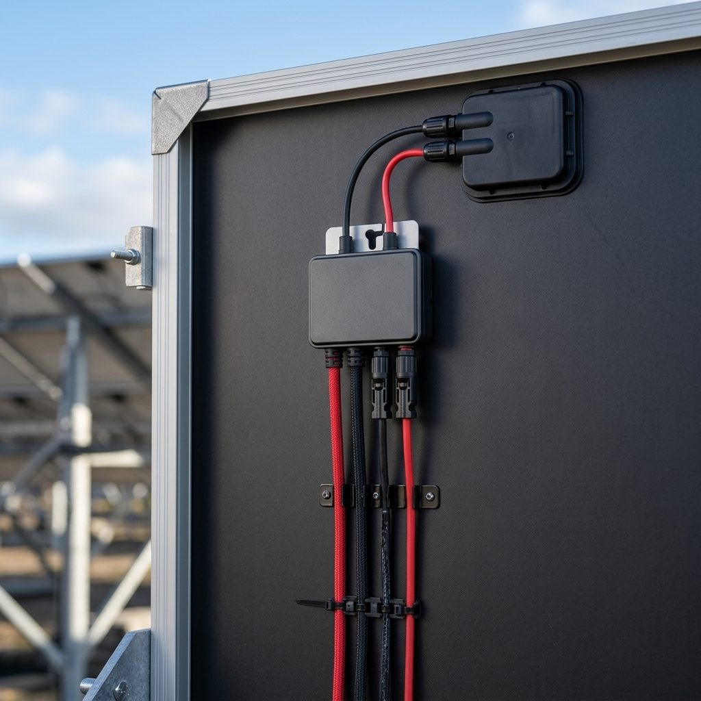

Főoldal / Napelem szerelés
Napelem,amit jólrögzítenek.
Tervezés, ügyintézés, telepítés és beüzemelés, egy csapattól, a tető állapotát is szem előtt tartva.
Hogyan zajlik
Hat lépés a felméréstől az átadásig
A napelem 25–30 évig dolgozik a tetőn, ezért a rögzítés és a tömítés számít a legtöbbet. Ugyanaz a csapat készíti a tetőt és a napelemet, így nem lyukasztja át a frissen elkészült tetőt más.
- 01FelmérésTető, szarufák, árnyékolás és az éves fogyasztás: számokkal, mielőtt ajánlatot adunk.
 AI által generált kép
AI által generált kép - 02Tervezés és ügyintézésRendszerméret, elrendezés, egyeztetés az áramszolgáltatóval. Az ügyintézést átvállaljuk.AI által generált kép
- 03RögzítésA tartók a cserép alatti szerkezethez kerülnek, a rögzítési pontokat tömítjük vagy szegélyezzük.

AI által generált kép - 04Panelek és kábelezésA panelek fektetése, a kábelek rendezett elvezetése, a védelmi elemek beépítése.

AI által generált kép - 05Inverter és beüzemelésAz inverter, a mérés és az első indítás. Mindent ellenőrzünk, mielőtt átadjuk.
 AI által generált kép
AI által generált kép - 06ÁtadásÍrásos garancia, kezelési útmutató, bemutató a figyelő alkalmazásról.
 AI által generált kép
AI által generált kép
Görgess lefelé · a tető szétnyílik · alulról felfelé építkezünk
Nyolc réteg egy tetőben

Mi tudjuk, mi kell a jó tetőhöz!
Egy megfelelően kivitelezett szerkezet, és rajta energia a napból!
Kérdések
Napelem szerelés: amit érdemes tudni
Mekkora rendszer kell nekem?
Az éves fogyasztásból, a tető méretéből és az elérhető tájolásból számoljuk. A felmérésen a számláid alapján javaslunk méretet.
Mennyi ideig tart a telepítés?
Egy családi háznál a kivitelezés jellemzően néhány munkanap. Az ügyintézés és az áramszolgáltatói lépések ennél tovább tarthatnak, ezért az ajánlatban ütemtervet adunk.
Nem ázik be a tető, ha átfúrják a tartóknál?
Szakszerű kivitelezésnél nem. A tartókat a cserép alatti szerkezethez rögzítjük, a pontokat tömítjük vagy lemezszegéllyel védjük.
Mi van felhős időben és télen?
A panelek szórt fényben is termelnek, csak kevesebbet, télen a termelés általában kisebb. Az éves számítás ezt figyelembe veszi.
Kell karbantartás?
A panelek időszakos tisztítása és a rendszer évenkénti ellenőrzése ajánlott. A gyártó előírásait átadáskor kézbesítjük.
Mi történik, ha később tetőfelújítás kell?
Ezért érdemes a tetőt és a napelemet együtt tervezni. Ha mégis szükséges, a lebontást és az újraszerelést is vállaljuk.
Gyors árbecslő
Pár másodperc alatt ad egy tájékozódó sávot
Válaszd ki a munkát, húzd a csúszkát, és látod a nagyságrendet. A pontos, tételes ajánlatot a helyszíni felmérés után kapod.
Beszéljünk a tetődről
A helyszíni felmérés ingyenes, a válaszra 24 órán belül jelentkezünk.